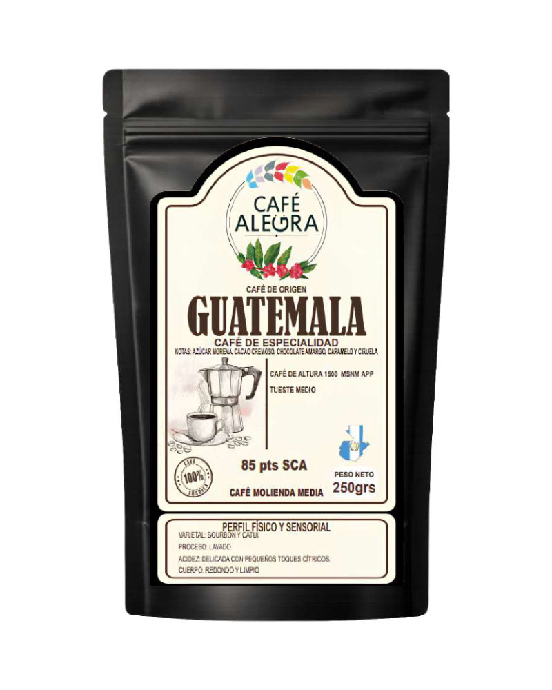

Inicio Café de especialidad Guatemala
CAFÉ DE ESPECIALIDAD · ORIGEN ÚNICO (85 SCA)Café de Especialidad Guatemala
Un café de altura, cultivado en la Sierra Madre a 1.500 msnm, con notas a azúcar morena, cacao cremoso y chocolate amargo.

Café de Especialidad Guatemala (85 SCA)
Este café de especialidad, elaborado a partir de los varietales Bourbon y Catuaí, cultivados a 1.500 msnm, presenta un perfil sensorial donde destacan el dulzor del azúcar morena, la suavidad del cacao cremoso y la profundidad del chocolate amargo, acompañados por delicados matices de ciruela. Su proceso lavado y tueste medio permiten apreciar una acidez delicada, con sutiles toques cítricos, y un cuerpo redondo y limpio. Una taza equilibrada, de sabores definidos y agradable complejidad.
Tueste: Medio
Información técnica
| Origen | Sierra Madre, Guatemala |
|---|---|
| Varietal | Bourbon y Catuaí |
| Notas | Azúcar morena, cacao cremoso, chocolate amargo y ciruela |
| Altura | 1.500 msnm |
| Tueste | Medio |
| Proceso | Lavado |
| Acidez | Delicada, con pequeños toques cítricos |
| Cuerpo | Redondo y limpio |
| Formato | 250 g |
| Precio | $13.500 |
| Puntaje SCA | 85 puntos |
Cómo prepararlo
Ideal en prensa francesa o métodos de filtrado.
Envíos
Despachos a todo Chile mediante Blue Express. Las tarifas de envío se calculan según región y comuna en el checkout. No aplica despacho gratuito.